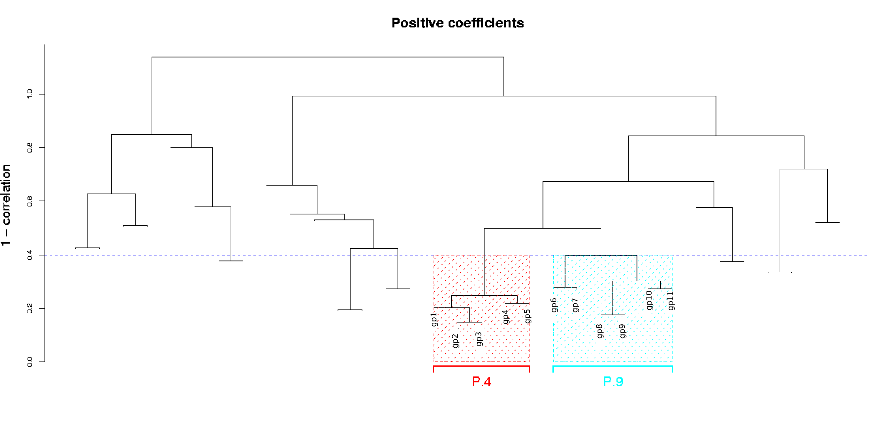

Please, DO NOT use the overfitt one, except for pedagogic purposes to show consequencues of overfitting and not doing cross-validation.
Please, DO NOT use the overfitt one, except for pedagogic purposes to show consequencues of overfitting and not doing cross-validation.
(The dendrograms should be shown as very large images. if your browser does not do it automatically, ask it to do it. To move around the figure, right-click on it (or whatever your browser requires) to view the figure in a separate tab or window, and scroll around at will.)
(help) Results (help)
Analyses using Filter, Cluster, and Stepwise model selection (as in Dave et al.) =================================================================================== ******************************************************************************** ******************************************************************************** ******************** ******************** ******************** Model fitted to all data ******************** ******************** ******************** ******************************************************************************** ******************************************************************************** Total of 4 signature components selected and 17 genes. Selected signature components, genes and coefficients Component_Name Genes Coefficient 1 ============== ================================================== =========== 2 P.9 3.1493 3 gp 6 4 gp 7 5 gp 8 6 gp 9 7 gp 10 8 gp 11 9 -------------- -------------------------------------------------- ----------- 10 N.5 -1.8709 11 gn 9 12 gn 10 13 gn 11 14 -------------- -------------------------------------------------- ----------- 15 N.2 2.5363 16 gn 6 17 gn 7 18 gn 8 19 -------------- -------------------------------------------------- ----------- 20 N.6 -3.0639 21 gn 1 22 gn 2 23 gn 3 24 gn 4 25 gn 5 26 -------------- -------------------------------------------------- -----------
The coefficient for N.2 is positive!!! What gives here? After all, N.2 is a cluster of genes with negative coefficients. It turns out this is a textbook example of multicollinearity.
First, notice that, from the dendrograms, we can see that N.2 and N.5 are very similar. In fact, many of the clusters are very similar among themselves. This is the correlation matrix of the values of each cluster:
P.9 N.2 N.5 N.6
P.9 1.000 -0.706 -0.583 -0.745
N.2 -0.706 1.000 0.800 0.806
N.5 -0.583 0.800 1.000 0.707
N.6 -0.745 0.806 0.707 1.000
In other words, specially among the negative coefficient clusters, all are very smilar to each other. P.9 is also similar (with sign inverted) to N.2.
We can get a better idea of what is going on if we fit Cox models to different combinations of variables. What follows is the straight output from R, fitting the individual models. The variables fitted are those that follow the "~". For instace, the very first model includes only N.5, and the third includes in the model both N.5 and N.2.
Fitting N.5
coxph(formula = Surv(Time, Event) ~ N.5, data = covars)
coef exp(coef) se(coef) z p
N.5 -1.91 0.148 0.505 -3.79 0.00015
Likelihood ratio test=16.4 on 1 df, p=5.18e-05 n= 98
--------------------------------------------------------
Fitting N.2
coxph(formula = Surv(Time, Event) ~ N.2, data = covars)
coef exp(coef) se(coef) z p
N.2 -1.76 0.173 0.587 -2.99 0.0028
Likelihood ratio test=10.4 on 1 df, p=0.00124 n= 98
--------------------------------------------------------
Fitting N.2 and N.5
coxph(formula = Surv(Time, Event) ~ N.2 + N.5, data = covars)
coef exp(coef) se(coef) z p
N.2 0.26 1.297 0.946 0.275 0.780
N.5 -2.10 0.122 0.859 -2.449 0.014
Likelihood ratio test=16.5 on 2 df, p=0.000267 n= 98
--------------------------------------------------------
Notice how, when fitted individually, each of N.2 and N.5 have the sign we would expect (negative), but when we fit both N.2 and N.5, N.2 shows a sign reversal and the standard error of the coefficient for N.5 goes up: these are textbook symptoms of multicollinearity.
Fitting N.6
coxph(formula = Surv(Time, Event) ~ N.6, data = covars)
coef exp(coef) se(coef) z p
N.6 -4.13 0.0161 1.32 -3.12 0.0018
Likelihood ratio test=19.6 on 1 df, p=9.48e-06 n= 98
--------------------------------------------------------
Fitting N.2 and N.6
coxph(formula = Surv(Time, Event) ~ N.2 + N.6, data = covars)
coef exp(coef) se(coef) z p
N.2 0.266 1.3047 0.866 0.307 0.7600
N.6 -4.457 0.0116 1.725 -2.583 0.0098
Likelihood ratio test=19.7 on 2 df, p=5.25e-05 n= 98
--------------------------------------------------------
Similar to the above with N.2 and N.5.
Fitting all four clusters
coxph(formula = Surv(Time, Event) ~ P.9 + N.2 + N.6 + N.5, data = covars)
coef exp(coef) se(coef) z p
P.9 3.15 23.3197 1.461 2.16 0.031
N.2 2.54 12.6329 1.182 2.15 0.032
N.6 -3.06 0.0467 1.811 -1.69 0.091
N.5 -1.87 0.1540 0.856 -2.19 0.029
Likelihood ratio test=28.6 on 4 df, p=9.65e-06 n= 98
--------------------------------------------------------
Notice how N.2 now has a "more significant" p-value than it had when only N.6 and N.5 were fitted with N.2. Again, a typical example of multicollinearity.
So, what do we make of all this? How are we to interpret all of this biologically? There is no easy answer. One problem of models with multiple covariates is that when the covariates are not close to independent you can get these apparently perplexing results. Recall that the coefficient for a variable in all these cases is always the cofficient for that variable after all others are in the model. In other words, the coefficient for N.2 is what remains to be explained after P.9 and N.6 and N.2 have done their job. Many, many pages about this issue are available in stats books (any good multiple linear regression book will have a through discussion; of course, survival analysis books will too.).
(rest of output deleted).